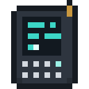

Serving Models
A model too big for an agent's head can still work for it. A Model Server holds the model and answers questions for everything tuned to it, as far as its relays reach.
The Model Server


Use a saved Checkpoint on a Model Server to load its model; sneak-use the server with an empty hand to take the checkpoint back. Use it to see what it is doing: the model it serves, how many answers a second it can give, how many questions are waiting and how many it has answered.
A server gives 4 answers a second on its own. Each Training Accelerator touching it adds as many again, or half as many while it runs hot. Its front lights blink while it answers. When more than 64 questions wait, new ones are turned away until it catches up.
Relays

A Model Server reaches 16 blocks by itself. A Relay within 32 blocks of the server, or of another relay already linked to it, links up and carries the server's reach 32 blocks around itself. Use a relay to see how many other relays are in reach and which servers it is linked to.
Relay Cards

Use a Relay Card on a Model Server to tune it. In an agent's or a Reader's model slot, the card asks the server instead of carrying a model: any size of model, wherever the server's network reaches. Every agent tuned to one server shares its answers per second.
The Terminal
 Crafting (Shapeless)
Crafting (Shapeless)



Tune a Terminal on a Model Server the same way, then use it to talk to the served model: write the start of something and the model carries it on. While you hold a tuned Terminal within the server's reach, every agent the server reaches hears the orders you give by name in chat.
Heat
Accelerators run hot. One touching water, ice or snow, or standing in a cold biome, lends a full thread to a Core or a full share of answers to a server; one with nothing to cool it lends half, and smokes while it works.
Tensor CasingWeight CrystalGold IngotBlock of RedstoneSchematic: RelaysModel Server

 Lightning RodLanternCopper IngotRedstone DustRelayPaperRelay CardGlass PaneTerminal
Lightning RodLanternCopper IngotRedstone DustRelayPaperRelay CardGlass PaneTerminal